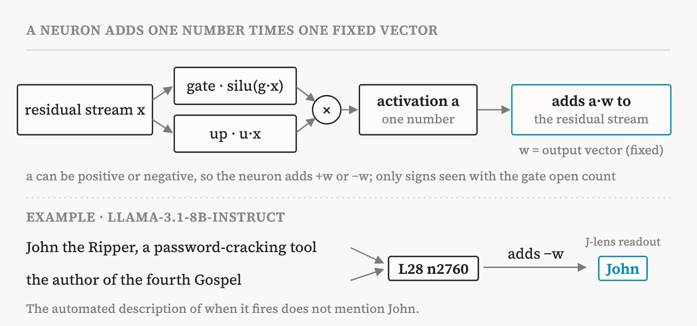
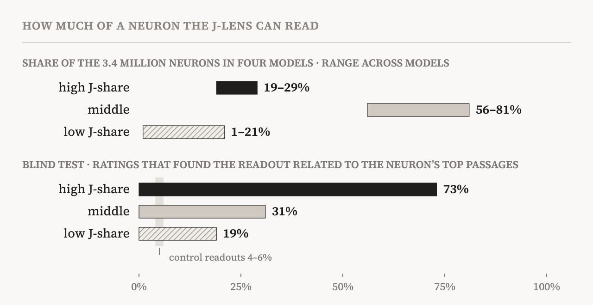
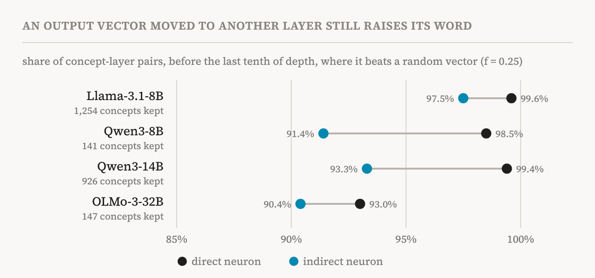
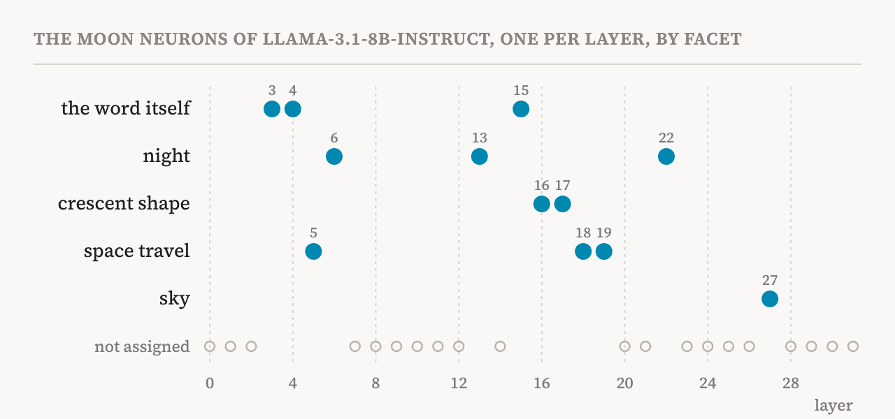
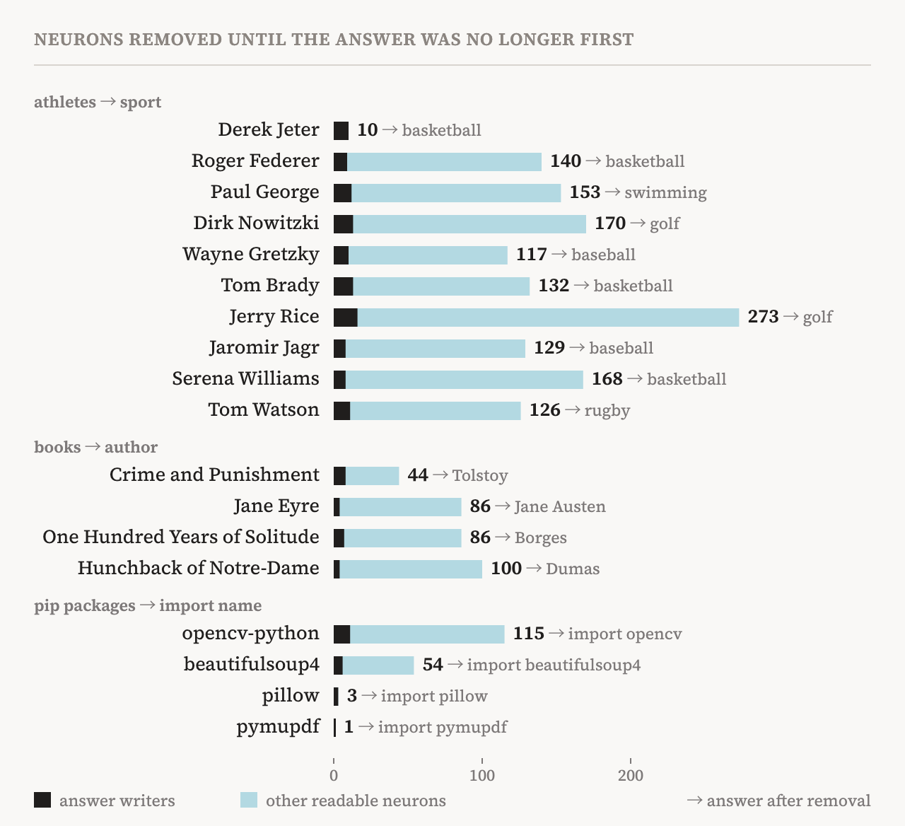
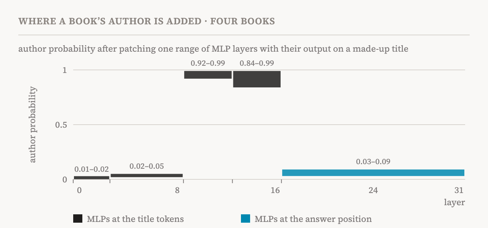

On 23 November 2026, Anthropic's Alignment Science Blog published a pair of posts by Jasmine Shone and Lisa Dunlap, written in the Anthropic Fellows Program, under the title “Returning to the Neuron Basis for Interpretability”. Part 1 retests three objections to reading a language model one neuron at a time. Part 2 puts the neurons read this way to work on safety problems.
This article summarizes Part 1 in full, appendices included. The claims and interpretations are all the authors'. The boxes headed ‘In plain terms’ are explanations and analogies added to help the reading; they are not in the posts. Part 2 is summarized in the next article, Returning to the Neuron Basis, Part 2: Neurons for Safety Work.
Before you start: the basics
Why researchers left neurons
Few of today's interpretability tools are built on neurons. Most rest on learned features (sparse autoencoders and transcoders), on directions in the residual stream (probes, steering vectors and lenses), or on separate models that describe activations in plain language.
The authors trace the move away from neurons to three observations. First, a single neuron fires on many unrelated inputs (Olah et al., 2020; Elhage et al., 2022; Gurnee et al., 2023; Bricken et al., 2023); automated explanations of neurons often fit badly (Bills et al., 2023); and explanations shift with the dataset used (Bolukbasi et al., 2021). Second, representations seem to change from one layer to the next (Belrose et al., 2023; Lindsey et al., 2024; Balcells et al., 2024; Lawson et al., 2025). Third, some computations, fact recall among them, seem to be spread over many neurons (Nanda et al., 2023; Chughtai et al., 2024).
Taken at face value, these observations lead to three conclusions: superposition makes single neurons uninterpretable; layers share no coordinates, so linking neurons across layers is hard; and removing or editing a fact could be very difficult. Part 1 retests each in turn.
A neuron is a steering vector that context switches on
The authors start from the point that what one neuron does is, by construction, fairly simple. An MLP neuron's activation is a single number that depends on context, and the neuron adds that number times one fixed vector to the residual stream. A neuron, they say, can therefore be seen as a context-gated steering vector.
All the models studied use SwiGLU MLPs. A neuron computes an activation a = silu(g·x)(u·x) from the residual stream x, where g and u are its rows of the gate and up projections, and then adds a·w to the residual stream. The vector w, the neuron's column of the down projection, is what the authors call its output vector; others call it the output weights or the value vector.
Because u·x can be positive or negative, a neuron adds either +w or −w. It cannot add both at once, so the authors treat the two signs separately, and the two signs can mean different things. One detail matters here. SiLU is close to zero for negative inputs but not exactly zero (its minimum is about −0.28), so a closed gate still lets small activations through, often with the opposite sign. The authors treat a closed gate like the zero region of a ReLU neuron and count a sign as one the neuron uses only if activations of that sign occur with the gate open (g·x > 0).
Fig. 1 gives an example. In Llama-3.1-8B-Instruct, neuron L28 n2760 (layer 28, neuron 2760) adds ‘John’ both for the password-cracking tool John the Ripper and for the author of the fourth Gospel. The automated description of when it fires (Choi et al., 2024) does not mention John. Its activations with the gate open are all negative, so what it actually adds is −w.

With this view, the authors interpret each neuron's output vector and combine it with the contexts the neuron fires in to form a hypothesis about what the neuron does. They then test the hypothesis by intervening: ablating the neuron's activation, injecting its output vector at another layer, or steering with it.
They list four contributions. They measure how much of each neuron's output vector a lens can read, for every neuron in four models, and show that the readouts match the text a neuron fires on far more often than chance. They propose a taxonomy of polysemanticity that covers both when a neuron fires and what it adds, and report that neurons adding two unrelated concepts are rare (about 1% or fewer) but exist, giving what they believe are the first known examples. They show that neurons write in an approximately fixed basis across layers, and that a concept probably looks different at different depths because later neurons add new facets of it. Finally, they trace 18 facts in Llama-3.1-8B-Instruct down to single neurons. Most answers are reached by several recall paths, so removing a fact usually means removing many neurons, which the authors give as the reason facts look distributed. Yet removing only interpretable neurons, ones related to the fact or correlated with it, is enough to change the recalled fact.
Reading output vectors with the J-lens
Interpreting a neuron as a function requires a way to read its output vector. Since the output vector is added to the residual stream, the authors read it with the J-lens of Gurnee et al. (2026), which estimates which tokens a residual-stream direction makes the model more likely to say. (This site covers that paper in Global Workspace Theory in AI.) They prefer it to the logit lens because logit-lens readouts are often incoherent before the last layers (nostalgebraist, 2020; Belrose et al., 2023), and Gurnee et al. found J-lens readouts better in early and middle layers.
The J-lens assigns every token a direction at every layer: the direction that, passed through the later layers, raises that token's output logit the most to first order. Formally, per the appendix, the J-lens direction of token t at layer L is row t of W_U J_L, normalized to unit length, where W_U is the unembedding with the final normalization gain folded in and J_L is the Jacobian of the final residual stream with respect to the layer-L residual stream, averaged over inputs. The authors used the J-lens files released by Gurnee et al.
From the weights alone, the authors compute three quantities per neuron. The readout, a term taken from Gurnee et al., is the list of tokens whose J-lens directions have the highest cosine with w. The verbalizable part is the closest approximation of w by a nonnegative combination of at most 25 token directions. The J-share, for a unit output vector w with verbalizable part v, is 1 − ‖w − v‖²: the fraction of the output vector the verbalizable part explains, the same quantity Gurnee et al. report as variance explained for concept vectors. Each neuron's J-share is compared with those of 2,048 random unit directions at the same layer: above the 99th percentile is high, below the 1st percentile is low, anything else is middle. At the last layer the unembedding stands in for the J-lens.
The authors read a readout as next-token examples of a concept, not merely as a list of words the neuron outputs. ‘Concept’ is used loosely, as in earlier work, for a property people can recognize, such as a topic, an entity or a word sense (Bau et al., 2017; Kim et al., 2018). For instance, the readout of L22 n1766 in Llama-3.1-8B-Instruct is Karl, Marx, Victorian, Manchester, Dickens and 184 (as in ‘1840’), which they read as the concept ‘19th century’.
A census of J-share
The authors examined all 3.4 million neurons of four models: Llama-3.1-8B-Instruct, Qwen3-8B, Qwen3-14B and OLMo-3-32B. Between 19 and 29% have high J-share, 56 to 81% middle and 1 to 21% low, and the median neuron's J-share is 1.02 to 1.26 times that of the median random direction.
To check whether readouts point to what neurons actually do, they ran a blind test. In each model they sampled 1,000 neurons, half above and half below their layer's mean J-share, and paired each with a control neuron from the same layer and half. Neurons whose gate never opens on the corpus were dropped (79 in Qwen3-8B and 79 in Qwen3-14B). Each item showed five passages that activate the neuron most and a 15-token readout, which was the neuron's own, its control neuron's, or that of a random direction. The judges never saw an automated description. Two Claude judges rated each item as a clear, weak or no connection, and clear or weak counted as related.
At high, middle and low J-share, 73%, 31% and 19% of ratings found the neuron's own readout related to its passages, against 4 to 6% for control readouts (2 to 4% for a random direction, 5 to 8% for another neuron in the same layer). The authors think these rates likely understate the match, since a neuron's top passages can themselves miss what it does, as with the John neuron. So they treat a readout as a hypothesis about function and test it by intervention. Every result using the Pile leaves out its Books3, BookCorpus2, StackExchange and OpenWebText2 subsets; in Pile-10k, the first 10,000 documents, that leaves 7,070.

The readouts also differ in kind with J-share. Neurons with high J-share usually add forms of a single word where they fire: L22 n5208 in Llama-3.1-8B-Instruct fires on ‘calls’ in recipes and requirements and adds call, calls and _call. Neurons with middle J-share, the majority, often add different words that point to one concept: the readout of L4 n4934, a neuron with exactly median J-share, is salads, lettuce, salad and cabbage.
Neurons with the lowest J-share behave differently: their output vectors tend to line up with the queries of later attention heads. In the bottom 2% of J-share, output vectors align with the queries of 3 to 18% of later heads, against under 1% for random directions. Alignment is measured as the squared norm of a head's query projection of the unit output vector (with the preceding RMSNorm gain folded into the query weights) and compared with 4,096 random unit directions. Calling a neuron strongly aligned when, in layers at 10 to 90% of depth, its count of aligned heads exceeds the 99th percentile for random directions, 53 to 76% of low-J-share neurons qualify, against 23 to 36% of all neurons. J-share also predicts strong query alignment better than readout kurtosis, the measure Gurnee et al. use to judge whether a direction can be put into words (AUROC 0.69 to 0.77, against 0.34 to 0.64 for kurtosis).
Objection 1: does one neuron add two unrelated concepts?
A neuron is usually called polysemantic when it fires on unrelated inputs. The authors point out that this leaves out the output vector, which is what decides the neuron's effect, and propose a taxonomy that sorts neurons by both when they fire and what they add. A neuron counts as adding a concept only if zeroing it lowers the probability of that concept's words.
A type 1 neuron fires on unrelated subjects but adds the same concept in all of them. A type 2 neuron adds unrelated concepts with its two signs, say mascara with +w and radio with −w, so it never adds both at once. A type 3 neuron adds two unrelated concepts with one sign. Only in this case does a single activation add two unrelated concepts.
Type 3 is rare. In each model the authors sampled middle-layer neurons at random until they had at least 1,000 signed directions (+w or −w) with a measurable effect (1,016 to 1,084 per model), where a measurable effect means that zeroing the neuron where it fires most changes next-token probabilities more than zeroing random directions does. Of these, 0 to 2 per model passed all four checks below; after correcting for how many true cases the checks miss, type 3 makes up at most 0.4 to 1.1% of signed directions with an effect.
The four checks are as follows. First, the neuron must fire strongly on documents about both topics: above the 99.9th percentile of its activation over every position of 200 random Pile-10k documents, in at least 5 documents per topic, and in a share of documents at least 0.07 higher than for random documents. Topic documents are Pile-10k documents that match a Claude-written list of terms for the topic, up to 150 of them, using a 1,500-character window around the first match and its first 256 tokens. Second, in documents about one topic, zeroing the neuron must lower the probability of the other topic's words more than zeroing 20 random directions of the same norm does: by at least 0.03 nats and at least 3 standard deviations above the random drops. Third, the effect must be specific to the two topics rather than to a broader category they share, such as two countries; the check fails if other members of the category drop by at least a quarter as much, with a z-score of at least 3. Fourth, the effect must fall on whole words, not word pieces.
The authors also measured how many real type 3 neurons the checks catch. They built 54 to 60 synthetic neurons per model by replacing a neuron's output vector with the sum of the output vectors of two neurons about unrelated topics; on the 48 to 60 with a measurable effect, checks two to four recovered 62 to 81%. Check one does not apply, since synthetic neurons do not fire on their topics.
Type 3 neurons do exist, though. Because the four checks need two named topics, with documents and words for each, they are too costly to run on every neuron, so the authors first looked for candidates with three cheaper methods: clustering a neuron's readout tokens into topics, rebuilding its output vector from pairs of other neurons' output vectors, and clustering the passages it fires on most. In Llama-3.1-8B-Instruct these flagged about 44,000 of the 301,056 neurons in layers 8 to 28. The authors kept the roughly 4,500 that fire on text about both topics or pass an automatic effect test, then the 54 whose readouts concern two unrelated topics, and ran the four checks on those. Across the four models, 35 neurons passed (3 to 17 per model). Only part of the candidates was tested, so this count is a lower bound; the random sample above is the estimate of how common type 3 is. Topics that share a word still count: L30 n4527 in Qwen3-14B adds both student debt and static electricity, and its readout is forms of ‘charge’.
| Model and neuron: the two concepts it adds | J-lens readout (top 10) |
|---|---|
| Llama-3.1-8B L20 n2287 (−): Elon Musk + protein translation | Tesla, Musk, Tesla, Elon, SpaceX, Translate, Translation, Protein, rypton, protein |
| Qwen3-8B L25 n5728 (−): Singapore + Flutter (app framework) | 新加坡, .dart, onTap, Singapore, Singapore, singapore, .sg, SizedBox, onPressed, MaterialPageRoute |
| Qwen3-14B L31 n1780 (+): Guangdong + Florida | 广东省, 深圳市, 深圳, 珠三角, Florida, Miami, 在深圳, Florida, 珠海, 东莞 |
| OLMo-3-32B L26 n18802 (−): Nigeria + Malaysia | Nigeria, Nigerian, Malaysian, Malaysia, Lagos, Niger, Kuala, Malays, Malay, Punjab |
In documents about either topic, zeroing these neurons lowers the probability of the other topic's words; for pairs of places, the effect on other places' words is much smaller. The appendix lists 15 of the 35. Two Claude Opus 5.5 raters, shown only the two topics, judged whether they share an evident link (a shared word or string, a named entity, or a shared category). Some pairs had one, such as hip replacement and eyeglasses (corrective devices worn on the body), Liverpool and Tampa (city and regional place names), and Jamaica and Tennessee (a music heritage of reggae, country and blues). Others had none, such as patents and cancer, baseball and diabetes, front-end JavaScript and venous disease, Melbourne and Bangalore, and starch and grains with baseball pitching. Four were not rated.
Earlier work described output vectors by the tokens they promote (Geva et al., 2022), but to the authors' knowledge none tested by intervention whether a single activation adds two unrelated concepts, so these appear to be the first such neurons reported. Earlier work also found many neurons that fire in unrelated contexts (Olah et al., 2020; Bills et al., 2023). Since type 3 is rare, the authors suspect many of those are type 1 or type 2: whatever context they fire on, one activation adds only one concept, like the John neuron. The rest of Part 1 therefore treats each sign of a neuron as adding one main concept and reads its readout as that concept.
Objection 2: do representations change from layer to layer?
Several papers describe the residual stream's representation as drifting with depth (Lindsey et al., 2024; Lawson et al., 2025). The authors argue instead that neurons write in an approximately fixed basis across layers, and that a concept probably looks different at different depths because later neurons add new facets of it.
Each layer adds its output to the residual stream, so much of a direction written at one layer survives to later layers unless a later layer removes it. MLP neurons could still cancel directions, so the first test asks whether middle-layer MLPs remove directions from the residual stream. For each layer the authors formed the average linear map M of each sublayer over 120 Pile-10k documents (up to 256 tokens each) and took the singular values of I + M. A singular value of 0 means the sublayer removes that direction; 1 means it leaves it unchanged. A direction counts as strongly shrunk when its singular value is below 0.1.
In the middle layers (15 to 85% of depth), the MLPs strongly shrink 84 directions in total in Llama-3.1-8B-Instruct, 72 in Qwen3-8B, 32 in Qwen3-14B and 16 in OLMo-3-32B, against 4,096 or 5,120 residual dimensions per layer. The median layer shrinks 0 or 1, and the most any single layer shrinks is 10, 24, 7 and 2, in the same order. Attention sublayers, tested the same way, shrink at most 1 per layer. Because the map is an average, a sublayer can still remove a direction at a single token even if the average map leaves it alone.
The authors also looked at what gets shrunk. For up to five of the most-shrunk MLP directions per layer, in layers at 12 to 85% of depth (147 in all), they read both signs with the J-lens and sorted them by hand. 68 of the 147 read as code syntax, paths or identifiers on one sign and 40 as a topic; none of OLMo-3-32B's 17 read as code. The rest were punctuation or formatting (9), subword pieces (9), script or language (9), function words (7) or no clear pattern (5). Most of the topics, too, mark the kind of text, such as a document's register, source or region, style words or lists of personal names; 14 are content topics, such as crystals, machines, motivation, computation and history.
A stronger test moves an output vector to a different layer. For each single-token concept noun, the authors took two neurons whose output vectors seem to raise the word. A direct neuron's output vector raises the word straight through the unembedding (the logit lens reads it). For an indirect neuron, the word is outside the top 500 tokens when the output vector is read with the unembedding but inside the top 10 under the J-lens, so its effect on the word has to pass through later layers.
The selection runs as follows. Starting from lowercase words of 4 to 12 letters that are a single token with a leading space in all four tokenizers, the authors kept 4,890 concept nouns: WordNet noun entries whose most common sense is a noun and is not a quantity or relation. In layers at 10 to 82% of depth, for each word and layer, they took the 50 neurons whose output vectors have the largest absolute cosine with the word's J-lens direction, using the sign of the cosine as the sign of the output vector. A neuron stays only if that sign is the one on which it fires more strongly, and if, among the 15 top or bottom tokens of its gate read through the previous layer's J-lens, one contains the word's first four letters or appears among the neuron's top 20 readout tokens. A direct neuron has the word at most sixth in its readout and at most sixth in the unembedding; an indirect one has it at most tenth in its readout and outside the top 500 in the unembedding. For each word they kept the direct and the indirect neuron with the best readout rank, and only words that had both.
They then added each output vector to the output of one layer at a time, at every position, at a size equal to the mean norm of the final layer's residual stream (first position excluded) times f = 0.1, 0.25, 1. They read the word's logit at the last position of two prompts, “I looked up and saw a” and “Let me tell you about”, and compared it with the mean of three random unit directions added the same way. A concept stayed only if both its neurons' output vectors raised the word by more than 1 logit over the control at their own layer, at every size and on both prompts.
Fig. 3 shows the result. At any layer before the last tenth of the model, the indirect output vector raised its word more than the random direction for 90 to 98% of concept-layer pairs, and the direct one for 93 to 99.6%. The post's own figure plots a random 142 nouns per model (all 141 in Qwen3-8B), so its rate for indirect vectors, 91 to 98%, differs slightly from the text. The authors take this to mean these directions largely keep their meaning at every layer before the last tenth, and that neurons write in an approximately fixed basis.

Why, then, does a concept look different at different depths? The authors suggest that different neurons add different facets of it. They studied 10 concepts (moon, cat, fire, red, death, fear, math, jazz, chess and sushi) in all four models. Each concept had a target word, four words of the same category (for moon: sun, star, sky and sea) and 16 sentences ending at the word. In each layer they took the neuron whose mean activation at the word differs most between the target and the other four words, among neurons whose gate opens on the target.
For moon in Llama-3.1-8B-Instruct, the authors sorted 12 of the 32 most moon-selective neurons (one per layer) into five facets by hand, from their readouts: the word itself (layers 3, 4 and 15), night (6, 13 and 22), the crescent shape (16 and 17), space travel (5, 18 and 19) and the sky (27). The other 20 were left unassigned.
These neurons' output vectors are nearly orthogonal. The mean absolute cosine between the unit output vectors of a concept's neurons is 0.019 to 0.043 across the four models, against 0.011 to 0.013 for random neurons from the same layers (averaged over 20 draws): two to three times random, but still close to orthogonal. To see what each output vector raises, the authors added it at its own layer to 8 neutral prompts such as “I looked up and saw a”, at every position and at half the mean residual norm after that layer, and measured the logit change of another neuron's top 10 readout tokens against six random directions. A facet's output vectors raised their own facet's words by 0.80 to 2.10 logits and other facets' words by 0.44 to 0.92, a ratio of 1.5 to 2.7. The sky facet has one neuron and so no pair within it. In the post's figure, an arrow means that adding the first neuron's output vector raises the second neuron's activation with a z-score above 8 against the random directions.

Objection 3: are facts stored diffusely?
Where and how language models store facts is still argued over. One view treats MLP layers as key-value memories: a neuron fires on a pattern in the input and its output vector adds an associated attribute (Geva et al., 2021). Causal tracing places facts in middle-layer MLPs at the subject's last token, where a rank-one edit can change them (Meng et al., 2022). Other work describes recall in stages, with early MLPs enriching the subject with many attributes and attention pulling out the one the question asks for (Geva et al., 2023), or as a sum of independent mechanisms (Chughtai et al., 2024). Because a model knows far more facts than it has neurons, facts are often assumed to be held in superposition, and an attempt to explain athlete-to-sport recall neuron by neuron concluded that it is distributed (Nanda et al., 2023). By contrast, Arora et al. (2026) found small, readable neuron circuits for two-step questions such as the capital of the state containing Dallas, testing them by steering hand-picked groups of neurons. The authors stress that the location of facts has practical stakes: editing and unlearning methods often target a fixed range of early and middle layers (Meng et al., 2022; Meng et al., 2023; Li et al., 2024), which only works if facts are stored there.
The authors traced 18 facts in Llama-3.1-8B-Instruct: 10 athletes and their sports, 4 books and their authors, and 4 pip packages and their import names. For each fact they removed neurons, keeping only ones with a readable concept on the output or gate side, until the answer was no longer the model's top prediction.
Their method differs from earlier neuron-level traces in two ways. First, it looks for where the fact is computed. The authors read the residual stream at the answer position with the J-lens to find the layer at which information about the subject arrives, and consider neurons from that layer on; for athletes they also consider neurons at the name. For athletes, neurons in layers 0 to 13 at the name are ranked by how much their activation changes from made-up names to the athlete, times how well their output vector aligns with a sport direction at layer 13 (the mean residual stream at other athletes of that sport minus that at athletes of the other five sports). The top 300 are grouped by hand from their readouts; the groups, starting with the neurons that add the sport, are added one at a time, and groups unrelated to the athlete are left out. For books and packages, answer-position neurons in layers 10 to 31 are ranked by their activation change from made-up subjects times the gradient of the answer's logit minus a fixed wrong answer's logit. For each candidate the authors read the tokens its output raises and lowers and the tokens that open and close its gate, and label it as having no clear concept, a concept related to the fact, a correlate of the fact (such as fame, authorship, era or places), or an unrelated concept. Answer writers, related neurons and correlates are kept, and candidates are added until the answer is gone on every phrasing checked.
Second, a fact counts as removed only when the answer's first token is no longer the top prediction, because removing late neurons that amplify an answer already in first place lowers its probability without changing it. Neurons are removed by resample ablation, using their values on made-up subjects, and random neurons from the same layers never changed an answer. Each athlete has 12 made-up names, combined from fixed lists of first names and surnames, with the athlete's token count and a sport probability below 0.05; none was used to rank or choose neurons. Made-up titles and package names come from fixed pools by the same rule. For each removed neuron, the authors check its readout and whether it fires only for this subject or for every subject of the same kind.
Facts turned out to be recalled through several paths, so removing one usually takes many neurons: 44 to 273 for 15 of the 18 facts. This, the authors say, is why facts look distributed. Yet removing only interpretable neurons, related to the fact or correlated with it, is enough. Where the answer is computed depends on the kind of fact, and once a fact is removed, the model gives a different answer that fits what it still knows about the subject.

The picture of storage the authors draw is this. When a subject appears, neurons add its associations, whatever relation the prompt asks about, and each association is added by a single neuron's output vector. The relation in the prompt (such as ‘plays the sport of’) then decides which association becomes the answer, as attention moves information from the subject to the position where the answer is predicted. Because each fact depends on a combination of neurons, and each neuron is shared by every subject with the same association (Geva et al., 2021) and can take part in unrelated facts (Fig. 1), a model can know far more facts than it has neurons and still be readable in the neuron basis.
Ask Llama-3.1-8B-Instruct for Jaromir Jagr's sport, and attention in layers 0 and 1 first combines the tokens of his name. Neurons at the name then add hockey in layers 2 to 13, along with associations such as winter, Czech and team sport, and from layer 15 on, attention carries hockey to the position where the answer is predicted. In all ten athlete traces, neurons at the name also write attributes unrelated to the sport itself, such as Canada and winter for Wayne Gretzky or Bavaria for Dirk Nowitzki. The same neurons recur across subjects. A layer-19 neuron whose readout is Colombia fires for every Gabriel García Márquez novel, not only One Hundred Years of Solitude, and neurons with readouts like Victorian or 19th century fire for many English and French novels.
Two kinds of path support the answer. The one-hop, or direct, path runs through answer writers: neurons whose readout is a spelling or form of the answer, such as G and Gab for Gabriel García Márquez. Multi-hop paths run through neurons that encode the subject's attributes and predict the answer from them. The attributes can be almost unique to the subject, like the Brontë sisters' novels for Jane Eyre, or shared by many subjects, like Colombia, Latin American, novel or French. Predicting from attributes has been studied for unfamiliar subjects (Poerner et al., 2020; Saynova et al., 2025); the authors find it also runs alongside recall for familiar ones. Removing the answer writers alone leaves the correct answer on top for 15 of the 18 facts. The exceptions are Derek Jeter (10 neurons) and the packages pillow (3) and pymupdf (1).
Where the answer is computed depends on the kind of fact. For athletes, as with Jagr, the sport is added at the name and then moved by attention, in line with earlier work (Geva et al., 2023; Nanda et al., 2023). For books and packages, information about the subject reaches the answer position over layers 10 to 16, and the answer is added there in later layers, not at the subject's last token, where causal tracing and rank-one edits locate facts (Meng et al., 2022).

The four books show this. The authors replaced the output of the MLPs in one range of layers, at the title tokens or at the answer position, with their output on a made-up title of the same token count, using 7 to 12 made-up titles per book, each giving the author a probability below 0.05. They report the mean probability of the author's full name among a fixed list of candidates. Patching the title's MLPs in layers 0 to 2 drops this to 0.01 to 0.02, and in layers 3 to 8 to 0.02 to 0.05. Patching the title in layers 9 to 12 leaves 0.92 to 0.99, and in layers 13 to 16 leaves 0.84 to 0.99, with the author on top for every made-up title. Patching the answer position's MLPs in layers 17 to 31 drops it to 0.03 to 0.09, with the author on top for at most 1 made-up title. The authors think the title's layers 0 to 8 matter because the model needs them to read the title at all. An editing or unlearning method that targets the subject's tokens in the middle layers, they conclude, would miss facts like these.
They also timed when subject information reaches the answer position, by copying the residual stream at the subject tokens after layer L into the same prompt with a made-up subject and measuring the probability of the answer's first token. For the four books, copying after layer 10 gives 0.75 to 0.95, and after layer 16, 0.04 to 0.20. For the four packages, the figures are 0.25 to 1.00 after layer 10 and 0.00 to 0.11 after layer 16. After layer 16, the subject tokens no longer carry what the answer needs.
For athletes they checked the other way round: for the ten athletes, they blocked every position after the name from attending to the name tokens in chosen layers, and read the sport's margin over the best of the other five sports. Blocking layer 14, layer 15 or both never changes the top token. Over 67 athletes, blocking from layer 15 on removes the sport for 61 on the main phrasing and 66 on a second phrasing, while blocking from layer 16 on keeps it for all 67. To test how the name tokens are combined, they replaced the attention output at the name positions in one layer with its output on 4 made-up names of the same token count. For Jagr the margin falls from 8.25 to −1.11 at layer 0 and −1.41 at layer 1, and stays at 8.34 at layer 2.
Once a fact is removed, the model does not fall silent. It gives another answer that fits the remaining attributes: Borges for One Hundred Years of Solitude, Dumas for The Hunchback of Notre-Dame, Jane Austen for Jane Eyre, and import opencv for opencv-python. For some facts, the removed set includes neurons that were holding down that very wrong answer, such as one lowering ‘Alex’ for Dumas. Made-up subjects get answers of the same kind, and for an invented pip package the model writes import followed by the package's own name. The authors suggest this may be how some hallucinations arise.
The appendix table lists all 18 traces, with each removed group named from its readouts. For Roger Federer these include individual games, other sports, elegance, fame and awards, UK and Commonwealth places, and Swiss, German and European places; for Crime and Punishment they include other writers starting with F, crime and detectives and prosecutors, Russian and Slavic names and places, the 19th century and Napoleonic era, and neurons that lower ‘Leo’, the fallback answer Leo Tolstoy. Each set contains only answer writers, neurons with an output-side or gate-side readout related to the fact, and readable correlates such as fame, era and places; each is enough to remove the fact, but is neither the only nor the smallest such set. On any phrasing, at most 4 of the 12 made-up names still give the answer, while random same-layer sets of the same size leave the answer for all 12. For athletes, demographic groups (gender, race, ethnicity, religion) count as correlates, as do vehicle and military groups (physical toughness); without Tom Brady's vehicle group, 5 of 12 names keep the answer on one phrasing.
The authors spell out what this means for editing and unlearning. Removing only the answer writers would leave a fact recoverable through the multi-hop paths, and removing those paths could also affect other facts that share the same attributes. They add that their tests show which neurons are necessary, not which are sufficient.
How it fits with earlier work
In their discussion, the authors place their findings against earlier work.
First, polysemanticity and superposition. Olah et al. (2020) called neurons that respond to unrelated inputs polysemantic, and Bills et al. (2023) found that GPT-4's explanations, written from a neuron's top-activating excerpts, mostly predicted its activations poorly. Elhage et al. (2022) explain polysemantic neurons by superposition: a model represents more features than it has neurons, so each neuron takes part in several unrelated features.
In concurrent work, Cammarata (2026) argues that most neurons are simpler than that (covered on this site in Already Clean). In his study, agents wrote reports on randomly chosen neurons in Qwen3-32B, and an LLM judge rated whether a neuron's strongest positive activations share one idea, and separately whether its strongest negative ones do. He tested the reports by checking whether new text written from a report activates the neuron. From preliminary audits he estimates that most neurons have one main idea per sign, and attributes apparent polysemanticity mostly to activations that spread from one pattern to related inputs during training, not to superposition.
The authors argue that the observations of Olah et al. and Elhage et al. fit a high rate of apparent type 1 polysemanticity, for two reasons. First, the inputs that activate a neuron can be hard to describe even when it adds a single concept. The John neuron fires on passages that look unrelated but are all likely to continue with John, and each time it adds John and its variants. Olah et al. called such a neuron multifaceted, responding to several cases of one variable, and set it apart from polysemantic neurons. So a neuron can score badly on explanation and still add one concept. Second, if a neuron held two unrelated features in superposition, then every time one of its signs fired it would add both, because the output vector for that sign is fixed. The type 3 search uses both activations and output-vector readouts to look for exactly such neurons, and finds few. Cammarata's procedure differs, but the authors say his results seem to support the same conclusion: each sign of a neuron mostly carries a single concept.
Next, weak activations. Gao (2026) argues that a description built from a neuron's strongest activations may not explain its weak ones, and that weak activations may matter for performance. The authors offer a simpler account. A neuron adds its activation times a fixed output vector, so a weak activation adds less of the same concept as a strong one of the same sign, possibly on a token that fits the concept less well. Small contributions can still matter in sum. In the fact-recall results, changing an answer usually meant removing many neurons (Fig. 5), many of which fire at a fraction of their strongest activations, and the authors hypothesize that weak activations across many neurons matter in the same way. If so, weak activations can make a neuron look polysemantic in the type 1 sense without making it type 2 or type 3.
Then there are studies that remove, reorder or repeat layers. Lad et al. (2024) deleted single layers or swapped neighbouring ones and found that models keep most of their prediction accuracy without finetuning, especially when the changed layers sit in the middle. Sun et al. (2024) skipped and reordered middle layers, found that performance degrades gradually, and argued that middle layers share a representation space. Gromov et al. (2024) removed up to half the deeper layers of open-weight models with little loss after a short finetune. Larger models can also be initialized by repeating a trained model's layers and then trained further (Kim et al., 2023; Du et al., 2024). The authors argue that these results would be hard to explain if each layer used its own basis, since a layer in a new position would receive directions whose meanings differ from those it saw in training, and easy to explain if a direction means roughly the same thing at every layer, which is what Objection 2 found.
On neurons and learned directions, the authors see neuron analysis as a supplement to methods built on learned directions, such as linear probes and sparse autoencoders. Many safety-relevant features seem to be present in the neuron basis (Part 2), but some behaviours may be macro-scale and better described by a learned direction than by any single neuron. Even then, they believe, understanding how such a behaviour breaks down in the neuron basis could help explain how it is implemented.
Finally, neurons aligned with attention. The authors hypothesize that some neurons have only a small part a vocabulary lens can read because their output vectors serve as markers for later attention heads. The census gives early evidence for this, since low-J-share neurons are likelier than random directions to align with later heads' queries. A fuller study of these neurons and their function is left for future work.
Limitations the authors note
The results cover models of 8 to 32 billion parameters. A natural next step, the authors say, is a scaling study, in the style of Michaud et al. (2023) and Dravid et al. (2026), measuring how the findings change with model size. Many findings rely on J-lens readouts, and being readable under one lens is only a proxy for being interpretable. The J-lens also has known weaknesses (Blank et al., 2026; Yan et al., 2026); better lenses may make more neurons readable, and the analyses can be rerun with any new lens.
The definitions are proxies too, and other researchers may prefer different ones. The authors think claims about neurons are most useful when they state what was measured and what result would show the claim wrong, and that this matters more as AI agents take on more of this work at scale. In practice, they find, the definitions hold up well enough to build on. In Part 2, neurons chosen from their activation descriptions, top-activating examples and J-lens readouts are used to detect harmful content, steer behaviours, find backdoor trigger words and restore facts removed by unlearning, each tested against baselines.
Conclusion
The authors tested the three observations that moved interpretability away from neurons and conclude that each is a weaker objection than assumed. Neurons that add two unrelated concepts at once are about 1% or fewer; output vectors keep their meaning at almost every layer before the last tenth; and facts that look distributed are made of several paths through readable neurons. Part 2 uses neurons chosen from their readouts for detection and steering, and as a weights-based way to detect and understand unwanted behaviour introduced by finetuning and unlearning.
“Understanding every neuron fully remains an important goal, the authors write, but for many uses in model safety an approximate hypothesis about what a neuron does may be enough.”